МИНИСТЕРСТВО ТРАНСПОРТНОГО СТРОИТЕЛЬСТВА
ТЕХНИЧЕСКИЕ
УКАЗАНИЯ
ПО ИСПОЛЬЗОВАНИЮ ЗОЛ УНОСА
И ЗОЛОШЛАКОВЫХ СМЕСЕЙ
ОТ СЖИГАНИЯ РАЗЛИЧНЫХ ВИДОВ
ТВЕРДОГО ТОПЛИВА
ДЛЯ СООРУЖЕНИЯ ЗЕМЛЯНОГО ПОЛОТНА
И УСТРОЙСТВА ДОРОЖНЫХ ОСНОВАНИЙ
И ПОКРЫТИИ АВТОМОБИЛЬНЫХ ДОРОГ
ВСН 185-75
Минтрансстрой
Согласованы Государственным комитетом Совета Министров СССР по делам строительства 9 апреля 1974 г. и утверждены Министерством транспортного строительства приказом № 12 от 15 апреля 1975 г.
МОСКВА 1976
«Технические указания по использованию зол уноса и золошлаковых смесей от сжигания различных видов твердого топлива для сооружения земляного полотна и устройства дорожных оснований и покрытий автомобильных дорог» разработаны в Государственном Всесоюзном дорожном научно-исследовательском институте (Союздорнии) на основе лабораторных исследований и опытно-производственного строительства в части применения зол уноса и золошлаковых смесей для устройства укрепленных дорожных оснований и покрытий автомобильных дорог.
Цель настоящих «Технических указаний» - способствовать широкому использованию в дорожном строительстве зол уноса и золошлаковых смесей для устройства различных конструктивных слоев укрепленных оснований, а в ряде случаев и покрытий автомобильных дорог.
Разработки «Технических указаний», касающиеся использования золошлаковых смесей для сооружения земляного полотна, рекомендуются для руководства при проведении широкого опытно-производственного строительства на дорогах всех категорий в разных грунто-геологических условиях различных дорожно-климатических зон Советского Союза.
В «Технических указаниях» отражены обобщенные результаты исследований Союздорнии, Гипродорнии, Госдорнии, Ленинградского, Среднеазиатского, Казахского, Омского филиалов Союздорнии, а также учтены данные производственного опыта Эстонской ССР и других научно-исследовательских и учебных институтов.
Обобщили результаты исследований и производственного опыта в настоящие «Технические указания» кандидаты технических наук И.Л. Гурячков, Ю.Л. Мотылев, канд. геол.-минерал. наук Н.С. Бирюков при участии инженеров А.С. Дудкина, А.Г. Петровой, Т.А. Коцюбинской, Т. И. Федосеевой.
Замечания и предложения по настоящим «Техническим указаниям» просьба направлять по адресу: 143900 Московская область, Балашиха-6, Союздорнии.
|
Ведомственные строительные нормы |
ВСН 185-75 |
|
|
Минтрансстрой |
||
|
Технические указания по использованию зол уноса и золошлаковых смесей от сжигания различных видов твердого топлива для сооружения земляного полотна и устройства дорожных оснований и покрытий автомобильных дорог |
Вновь |
|
Внесены Государственным Всесоюзным дорожным научно-исследовательским институтом (Союздорнии) |
Утверждены Техническим управлением Министерства транспортного строительства Приказ № 12 от 15 апреля 1975 г. |
Срок введения в действие с 1 августа 1975 г. |
1.1. Настоящие «Технические указания» предусматривают применение в дорожном строительстве зол уноса и золошлаковых смесей, получаемых при сгорании в котлоагрегатах тепловых электростанций (ТЭС) различных видов твердого топлива (бурого и каменного угля, торфа, горючих сланцев).
Эти отходы рекомендуется использовать при сооружении земляного полотна и устройстве укрепленных дорожных оснований на дорогах I - V категорий во II - V дорожно-климатических зонах, а также покрытий на дорогах IV - V категорий.
1.2. Раздельное получение зол уноса сухого отбора или золошлаковых смесей обусловлено принятым на ТЭС способом золоулавливания и организованной при этом системы золоудаления указанных отходов за пределы котельного цеха ТЭС.
1.3. В настоящее время на ТЭС, в основном, существует несколько способов золоулавливания: электрофильтрами, мульти- и батарейными циклонами, скрубберами.
При улавливании зол уноса электрофильтрами и циклонами возможна организация двух систем золоудаления:
а) Совместное гидрозолоудаление, когда зола уноса и шлак гидравлически удаляются в золоотвалы, образуя там золошлаковые смеси, весьма разнородные по своему химическому ч гранулометрическому составу и другим свойствам.
При такой системе удаления зола уноса и шлак теряют свою химическую активность, особенно свободную окись кальция и другие соединения, обеспечивающие самостоятельное твердение.
б) Отбор сухой золы уноса непосредственно из электрофильтров и циклонов, что позволяет получить наиболее ценный для дорожного строительства материал.
Зола уноса сухого отбора представляет собой достаточно однородный материал по своему химическому и гранулометрическому составу и дисперсности и обладает определенной химической активностью.
При улавливании золы уноса скрубберами ее удаление возможно только гидравлическим способом.
1.4. При строительстве автомобильных дорог золошлаковые смеси ТЭС используют в качестве:
а) материала для сооружения насыпей земляного полотна;
б) малоактивной гидравлической добавки* в сочетании с цементом при укреплении грунтов, на дорогах III - V категорий.
* Под малоактивными гидравлическими добавками понимают такие вещества (золошлаковые смеси), которые занимают промежуточное положение между инертными тонкомолотыми добавками и активными минеральными гидравлическими добавками. Такие вещества (золошлаковые смеси) способны со временем весьма медленно связывать свободную известь, образующуюся при твердении портландцемента.
1.5. Золы уноса сухого отбора используют для устройства укрепленных дорожных оснований и покрытий в качестве:
а) активной гидравлической добавки, т.е. активного компонента смешанного вяжущего в сочетании с цементом или известью;
б) самостоятельного медленнотвердеющего вяжущего.
При этом укрепляют различные несцементированные обломочные и супесчаные грунты, а также отходы, получаемые при дроблении каменных материалов.
1.6. Целесообразность применения золы уноса сухого отбора, а также золошлаковых смесей из отвалов ТЭС, устанавливается в каждом отдельном случае на основе технико-экономического обоснования с учетом качества зол уноса или золошлаковых смесей, дальности их возки и стоимости, экономии цемента и других факторов.
1.7. При возведении насыпей земляного полотна автомобильных дорог применение золошлаковых смесей из отвалов ТЭС (п. 1.4, а) целесообразно по технико-экономическим соображениям в случае:
- невозможности возведения насыпей из грунта боковых резервов и необходимости использования привозных грунтов;
- выгодности разработки и транспортировки в насыпь золошлаковых смесей по сравнению с разработкой и транспортировкой грунтов из сосредоточенных резервов.
При сооружении насыпей земляного полотна из золошлаковых смесей, как правило, целесообразная дальность возки золошлаковой смеси не превышает 20 км.
1.8. При устройстве укрепленных дорожных оснований и покрытий с применением зол уноса сухого отбора (п. 1.5, а) экономия цемента, как правило, составляет 30 - 40 % и более, а экономически целесообразная дальность возки золы при этом достигает 300 км по железной дороге.
При использовании зол уноса сухого отбора (п. 1.5, 6) полностью заменяется цемент для укрепления аналогичных грунтов, а экономически целесообразная дальность возки золы, применяемой в качестве самостоятельного вяжущего, достигает по железной дороге 800 км и даже более.
При использовании золошлаковых смесей (п. 1.4, 6) экономия цемента, как правило, не превышает 20 %, а экономически целесообразная дальность возки золошлаковой смеси составляет не более 50 - 70 км по автомобильной дороге.
1.9. Критерием оценки пригодности золошлаковых смесей для возведения земляного полотна следует считать их морозоустойчивость. Поэтому пригодность золошлаковых смесей для возведения земляного полотна устанавливают по их степени морозоустойчивости в соответствии с пп. 3.2 - 3.4, классифицирующей золошлаковые смеси по степени морозоустойчивости.
Примечание. Морозоустойчивость золошлаковых смесей, как и грунта, характеризуют величиной их относительного морозного пучения Кпуч, представляющей собой отношение вертикальной деформации пучения при промораживании образца к его первоначальной высоте, выраженной в процентах.
1.10. Несцементированные обломочные грунты различного гранулометрического состава, пески, а также супесчаные грунты и другие материалы, получаемые как отходы при камне-дроблении, укрепленные золами уноса (п. 1.5, а, б) или золошлаковыми смесями (п. 1.4, 6), твердеют и набирают необходимую прочность и морозостойкость в течение длительного времени, поэтому окончательную пригодность подобранных составов смесей таких укрепленных материалов для производственного строительства устанавливают по показателям прочности водонасыщенных образцов, твердевших в течение 90 суток во влажных условиях в соответствии с требованиями, изложенными в табл. 1.
Показатели физико-механических свойств укрепленных материалов
|
Классы прочности |
|||
|
I |
II |
III |
|
|
Предел прочности при сжатии водонасыщенных образцов в возрасте 90 суток, кгс/см2 |
60 - 40 |
40 - 20 |
20 - 10 |
|
Предел прочности на растяжение при изгибе водонасыщенных образцов в возрасте 90 суток, кгс/см2, не менее |
10 |
6 |
2 |
|
Коэффициент морозостойкости образцов в возрасте 90 суток (отношение предела прочности при сжатии после замораживания-оттаивания к пределу прочности при сжатии водонасыщенных образцов), не менее |
0,75 |
0,70 |
0,65 |
|
Влажность образца после испытания на замораживание-оттаивание, % по массе, не более |
2 % сверх оптимальной влажности уплотнения |
4 % сверх оптимальной влажности уплотнения |
|
1.11. Пригодность зол уноса и золошлаковых смесей для устройства укрепленных оснований и покрытий дорожных одежд устанавливают в соответствии с требованиями пп. 3.8 - 3.12.
В случае некоторых отклонений, в части требований, изложенных в п. 3.8 - 3.12, окончательно оценивают золы уноса или золошлаковые смеси на основе лабораторных испытаний образцов и соответствия показателей их физико-механических свойств табл. 1.
Составы смесей из укрепляемых материалов и вяжущих подбирают и испытывают в лаборатории, руководствуясь положениями, изложенными в разд. 5 настоящих «Технических указаний».
При сооружении земляного полотна
2.1. Проектирование и сооружение земляного полотна автомобильных дорог из золошлаковых смесей ТЭС осуществляют в соответствии с требованиями СНиП II-Д.5-72 и СНиП III-Д.5-73, а также «Инструкции по сооружению земляного полотна автомобильных дорог» ВСН 97-63, при этом необходимо руководствоваться типовыми поперечными профилями земляного полотна.
2.2. При сооружении земляного полотна с использованием золошлаковых смесей, относящихся к непучинистым и слабо-пучинистым материалам, насыпь сооружают обычными методами, без проведения дополнительных мероприятий в части устройства морозозащитного слоя и т.д.
2.3. При сооружении земляного полотна с использованием золошлаковых смесей, относящихся к пучинистым материалам, необходимо осуществить комплекс мероприятий (в соответствии с требованиями «Указаний по проектированию земляного полотна железных и автомобильных дорог» СН 449-72), направленный на предотвращение морозного пучения верхней части земляного полотна и связанных с ним деформаций дорожных одежд, а также деформаций, вызываемых подтоплением грунтовыми или размывом поверхностными водами нижних слоев земляного полотна.
Такой комплекс мероприятий уточняется в каждом конкретном случае и может включать:
- назначение крутизны откосов с учетом возможности использования существующих машин и механизмов для планировки, уплотнения и укрепления поверхности откосов;
- применение морозозащитных слоев в верхней части земляного полотна;
- использование дренажных устройств или капилляропрерывающих слоев;
- укладку защитных слоев на откосах насыпи земляного полотна;
- устройство берм и изолирующих слоев в основании земляного полотна;
- укрепление обочин земляного полотна и устройство требуемого водоотвода в процессе послойного возведения земляного полотна.
2.4. Морозозащитные слои целесообразно устраивать из золошлаковых смесей, обработанных цементом или известью в количестве 6 - 8 % по массе смеси.
При назначении добавки вяжущих веществ следует учитывать, что относительная величина набухания укрепленного материала после 28-суточного твердения должна быть не более 1 %, а величина относительного морозного пучения Кпуч должна быть в указанные сроки твердения не более 2 %.
При устройстве укрепленных дорожных оснований
2.5. Несцементированные обломочные грунты различного гранулометрического состава, пески, а также супесчаные грунты и другие материалы, укрепленные золами уноса (п. 1.5, а, б) или золошлаковыми смесями (п. 1.4, б), применяют в качестве оснований под различные капитальные или облегченные покрытия в разных дорожно-климатических зонах, в том числе и в зонах избыточного и значительного увлажнения (II, III зоны). Такие укрепленные материалы применяют и в качестве покрытий на дорогах IV - V категорий.
2.6. При назначении конструктивных слоев дорожных одежд из таких укрепленных материалов (п. 2.5) необходимо руководствоваться примерными типами дорожных конструкций, указанными в табл. 2, с учетом показателей физико-механических свойств укрепленных материалов и класса прочности (см. табл. 1).
При этом расчетные значения модуля упругости принимают для I класса прочности - 8000 - 5000 кгс/см2; для II - 5000 - 2500 кгс/см2 и для III класса прочности - 2500 - 800 кгс/см2.
2.7. Конструкции дорожных одежд с конструктивными слоями из укрепляемых грунтов (пп. 3.5 - 3.7) рассчитывают в соответствии с положениями действующей «Инструкции по проектированию дорожных одежд нежесткого типа» (ВСН 46-72).
Расчетные значения модулей упругости грунтов и местных материалов, укрепленных золами уноса сухого отбора в сочетании с портландцементом или известью, либо без них, а также укрепленных золошлаковыми смесями в сочетании с портландцементом, назначают в зависимости от вида укрепляемого грунта и применяемого вяжущего (табл. 3).
2.8. Для всех укрепленных материалов и грунтов, помимо расчетного значения модуля упругости по табл. 3, принимают второй расчетный показатель - предел прочности на растяжение при изгибе в зависимости от класса прочности:
класс I-не менее 4 кгс/см2;
класс II-не менее 2 кгс/см2;
класс III-не менее 1 кгс/см2.
Золошлаковые смеси
3.1. Золошлаковые смеси, которые предусматриваются для возведения насыпей земляного полотна, должны обеспечивать последним необходимую устойчивость и прочность в соответствии с требованиями действующих строительных норм и правил. Такие золошлаковые смеси классифицируют по степени морозоустойчивости в соответствии с табл. 4.
Рекомендуемые типы конструкций дорожных одежд
|
Конструктивные слои |
Типы конструкции |
Категории дорог |
|||||
|
I |
II |
III |
IV |
V |
|||
|
Дорожно-климатические зоны (римские цифры) |
|||||||
|
1 |
Покрытие из монолитного или сборного цементобетона |
II, III, IV, V |
II, III, IV, V |
II, III, IV |
- |
- |
|
|
2 |
Основание I или II класса прочности из несцементированных крупнообломочных материалов и грунтов (п. 3.5), укрепленных золой уноса (п. 1.5, а, б) |
||||||
|
1, 2, 3 |
Покрытие из трехслойного асфальтобетона |
II, III, IV |
II, III, IV |
- |
- |
- |
|
|
4 |
Верхний слой основания из тощего цементобетона М150, М200 |
||||||
|
5 |
Основание I или II.класса прочности из несцементированных крупнообломочных материалов и грунтов (п. 3.5), укрепленных золой уноса (п. 1.5, а, б) |
||||||
|
1, 2 |
Покрытие из двухслойного горячего или теплого асфальтобетона |
II, III, IV |
II, III, IV |
- |
- |
- |
|
|
3 |
Верхний слой основания из битумоминеральных смесей |
||||||
|
4 |
Нижний слой основания I класса прочности из грунтов (п. 3.5), укрепленных золой уноса (п. 1.5, а, б) |
||||||
|
5 |
Подстилающий слой основания II или III класса прочности из тех же материалов, из которых устраивается нижний слой оснований |
||||||
|
1, 2 |
Покрытие из двухслойного горячего или теплого асфальтобетона |
- |
- |
III, IV, V |
|
|
|
|
3 |
Верхний слой основания I класса прочности из грунтов (п. 3.5), укрепленных золой уноса (п. 1.5, а, б) или из тех же грунтов, укрепленных золошлаковой смесью (п. 1.4, б) |
||||||
|
4 |
Нижний слой основания II класса прочности из грунтов (п. 3.5), укрепленных золой уноса (п. 1.5, а, б), или из тех же грунтов, укрепленных золошлаковой смесью (п. 1.4, б) |
||||||
|
1, 2 |
Покрытие из горячих или теплых двухслойных битумоминеральных смесей |
|
|
III, IV, V |
II, III, IV |
|
|
|
3 |
Верхний слой основания I или II класса прочности из грунтов (п. 3.5) укрепленных золой уноса (п. 1.5, а, б), или из тех же грунтов, укрепленных золошлаковой смесью (п. 1.4, б) |
||||||
|
4 |
Нижний слой основания II или III класса прочности из тех же укрепленных материалов, из которых устраивается верхний слой основания |
||||||
|
1 |
Покрытие из теплого или холодного асфальтобетона |
- |
- |
II, III, IV, V |
|
|
|
|
2 |
Основание I и II класса прочности из грунтов (п. 3.5), укрепленных золой уноса (п. 1.5, а, б), или из тел же грунтов, укрепленных золошлаковой смесью (п. 1.4, б) |
||||||
|
1 |
Покрытие из битумоминеральных смесей горячих, теплых, холодных |
- |
- |
- |
II, III, IV, V |
II, III |
|
|
2 |
Основание II класса прочности из грунтов (п. 3.5), укрепленных золой уноса (п. 1.5, а, б), или из тех же грунтов, укрепленных золошлаковой смесью (п. 1.4, б) |
||||||
|
1 |
Двойная поверхностная обработка |
|
|
|
|
II, III, IV, V |
|
|
2 |
Покрытие-основание из различных рекомендуемых настоящими «Техническими указаниями» грунтов, укрепленных всеми видами зол уноса или золошлаковых смесей |
||||||
Примечания 1. Удельную поверхность зол уноса или золошлаковых смесей принимают в зависимости от категории дороги в соответствии с пп. 3.8 - 3.11.
2. Приведены отдельные наиболее типичные примеры, которые не исключают возможности применения других материалов и грунтов, а также других вяжущих и добавок химических веществ в соответствии с ВСН 140-68 и ВСН 158-69.
3. В зависимости от грунтов земляного полотна, гидрогеологических условий могут устраиваться дополнительные слои основания.
Расчетные значения модулей упругости укрепляемых материалов и грунтов
|
Расчетные значения модулей упругости (кгс/см2) при добавке |
||
|
зол уноса (п. 1.5, б) с удельной поверхностью не менее 3000 см/г зол уноса (п. 1.5, а) в сочетания с портландцементом, с удельной поверхностью золы не менее 3000 см2/г |
зол уноса (п. 1.5, а) в сочетании с известью, с удельной поверхностью золы не менее 3000 см/г зол уноса (п. 1.5, б) с удельной поверхностью не менее 1600 см2/г золошлаковых смесей (п. 1.4, б) с удельной поверхностью не менее 1600 см2/г |
|
|
Крупнообломочные несцементированные грунты, грунтогравийные и грунтощебеночные смеси, близкие к оптимальному составу, пески гравелистые, пески крупные и средние, разномерные |
4000 - 8000 |
4000 - 6000 |
|
Крупнообломочные несцементированные материалы и грунты, грунтогравийные и грунтощебеночные смеси неоптимального состава |
4000 - 3000 |
4500 - 6500 |
|
Пески одноразмерные разной крупности, пылеватые пески и супеси с числом пластичности менее 3 |
2500 - 7000 |
2000 - 5000 |
|
Супеси, близкие к оптимальному составу, супеси легкие и пылеватые, тяжелые супеси |
3000 - 7000 |
2000 - 5000 |
Примечания. 1. Для обеспечения принятого расчетного значения модуля упругости укрепленных материалов подбирают состав; смесей, руководствуясь показателями физико-механических свойств укрепленных грунтов по табл. 1 с учетом п. 1.11.
2. Максимальные и средние расчетные значения модулей упругости принимают при приготовлении смесей в смесительных карьерных установках и укладке смесей специальными укладчиками или приготовлении смесей однопроходными грунтосмесительными машинами.
Минимальные расчетные значения модуля упругости принимают при обработке грунтов и материалов дорожными фрезами методом: смешения на пороге.
3. Расчетные значения модуля упругости относятся к материалу, твердевшему в течение 90 суток.
Классификация золошлаковых смесей по степени морозоустойчивости
|
Значение относительного морозного пучения Кпуч, % |
|
|
Непучинистые |
Менее 1 |
|
Слабопучинистые |
1 - 3 |
|
Пучинистые |
3 - 10 |
|
Очень пучинистые |
Более 10 |
Примечания. 1. Морозоустойчивость золошлаковых смесей ориентировочно может быть оценена по содержанию в них частиц мельче 0,05 мм. При содержании в золошлаковых смесях частиц мельче 0,05 мм не более 5 % можно считать, что величина относительного морозного пучения их не превысит 3 %.
2. Классификация распространяется также на золы ТЭС, в случае использования, их для сооружения земляного полотна.
3. Определение степени пучинистости этих материалов для предварительного суждения о их пригодности производят на образцах, выдержанных в течение 7 и 28 суток.
Окончательное суждение о степени пучинистости указанных материалов принимают по результатам испытаний образцов, выдержанных в течение 90 суток.
3.2. Золошлаковые смеси, величина относительного морозного пучения которых не более 3 % (см. табл. 4), применяют для возведения насыпей земляного полотна без ограничений.
3.3. Золошлаковые смеси с величиной относительного морозного пучения от 3 до 10 % (см. табл. 4) допускаются для отсыпки земляного полотна с обязательным осуществлением комплекса мероприятий по обеспечению устойчивости земляного полотна и особенно его верхних слоев, находящихся в зоне промерзания (п. 2.3).
3.4. Золошлаковые смеси с величиной относительного морозного пучения более 10 % для возведения насыпей земляного полотна не используют.
Примечание. Испытания золошлаковых смесей по определению величины их относительного морозного пучения, а также по определению других свойств и состава, необходимые для их оценки, проводят в соответствии с п. 5.26 и приложением.
Грунты
3.5. Для укрепления золами уноса сухого отбора (применяемыми в качестве самостоятельного вяжущего или в качестве активного компонента смешанного вяжущего в сочетании с цементом или известью), а также золошлаковыми смесями (в сочетании с цементом) пригодны: крупнообломочные несцементированные грунты, включая различные естественные смеси (песчано-гравийные, грунто-гравийные и грунто-щебеночные различного зернового (гранулометрического) состава), пески гравелистые, пески крупные и средние, мелкие, в том числе и пылеватые или одноразмерные мелкие пески, а также все разновидности супесчаных грунтов.
3.6. Значение водородного показателя рН для всех видов обрабатываемых грунтов должно быть не менее 4.
3.7. Общее содержание легкорастворимых солей для всех видов грунтов, подвергаемых обработке, допускается в количестве не более 3 % по массе грунта при сульфатном и не более 5 % по массе грунта при хлоридном засолении.
Вяжущие материалы (золы уноса)
3.8. Золы уноса, применяемые для укрепления грунтов в качестве самостоятельного вяжущего или активного компонента смешанного вяжущего, должны быть сухого отбора непосредственно от электрофильтров или циклонов ТЭС, полученные после сжигания в котельных цехах ТЭС бурого и каменного угля, торфа, горючих сланцев. Такие золы уноса должны отвечать требованиям табл. 5.
|
Требования к золе уноса |
|||
|
Зола уноса - как самостоятельное медленнотвердеющее вяжущее |
Зола уноса - как активный компонент смешанного вяжущего |
||
|
в сочетании с цементом |
в сочетании с известью |
||
|
Содержание свободной окиси кальция, % |
Не менее 8 |
Не более 4 |
- |
|
Удельная поверхность, см2/г |
Не менее 3000 |
Не менее 3000 |
Не менее 3000 |
|
Содержание сернистых и сернокислых соединений (в пересчете на SO3), % |
Не более 6 |
Не более 3 |
- |
|
Потери при прокаливании, % |
Не более 5 |
Не более 10 |
Не более 10 |
Примечания. 1. Использование золы уноса как активного компонента смешанного вяжущего (в сочетании с цементом) предусматривает применение портландцемента или шлакопортландцемента марки не ниже «300», удовлетворяющего требованиям ГОСТ 10178-62 «Портландцемент, шлакопортландцемент, пуццолановый портландцемент и их разновидности» или извести - ГОСТ 9179-70.
2 Содержание свободной окиси кальция, сернистых и сернокислых соединений, потери при прокаливании определяют по ГОСТ 5382-65 «Цементы. Методы химического анализа» Удельную поверхность определяют по ГОСТ 310-60 «Цементы Методы физических и механических испытаний».
3. Содержание сернистых и сернокислых соединений (в пересчете на SO3) в золах уноса горючих сланцев Северо-Запада СССР, применяемых в качестве самостоятельного медленнотвердеющего вяжущего, допускается, как исключение в количествах, не превышающих 10 %.
3.9. Золы уноса (применяемые в качестве самостоятельного вяжущего или активного компонента смешанного вяжущего в сочетании с цементом или известью), удовлетворяющие требованиям табл. 5, используют для устройства укрепленных дорожных оснований на дорогах всех категорий без ограничений, а также в покрытиях на дорогах IV - V категорий.
3.10. На дорогах III - V категорий при устройстве оснований дорожных одежд и покрытий на дорогах только IV - V категорий допускается применять золы уноса сухого отбора с удельной поверхностью не менее 1600 см2/г, если содержание в них свободной окиси кальция, сернистых и сернокислых соединений и потеря при прокаливании соответствуют требованиям табл. 5.
3.11. При укреплении различных несцементированных крупнообломочных и песчаных грунтов золами уноса, отвечающими требованиям табл. 5 и применяемыми в качестве самостоятельного вяжущего, содержание свободной извести в золах допускается не более 15 % по массе золы.
При большем содержании свободной извести в золах их следует использовать для укрепления указанных грунтов только с добавками хлористого кальция (п. 3.15).
3.12. При укреплении цементом песчаных и супесчаных грунтов, а также крупнообломочных грунтов неоптимального состава применяют добавки, которые помимо физико-химического и химического взаимодействия с поверхностью частиц грунта способствуют также заполнению пор грунта. К таким добавкам относятся золы уноса или золошлаковые смеси гидроудаления, получаемые при сжигании бурого или каменного угля, не отвечающие требованиям табл. 5. При этом золы уноса или золошлаковые смеси должны содержать частиц размером мельче 0,071 мм более 60 %, частиц размером крупнее 2 мм - не более 5 %, а потери при прокаливании не более 10 %.
3.13. Количество зол уноса сухого отбора (применяемых в качестве самостоятельного вяжущего или активного компонента смешанного вяжущего в сочетании с цементом или известью), отвечающих требованиям табл. 5, назначают:
а) не менее 20 % от массы смеси-золы уноса в качестве самостоятельного вяжущего;
б) не менее 15 - 20 % от массы смеси в сочетании с 4 - 6 % цемента от массы смеси, добавку извести принимают в пределах 5 - 8 % от массы смеси (зола уноса в качестве активного компонента смешанного вяжущего).
3.14. Количество зол уноса или золошлаковых смесей гидроудаления, не удовлетворяющих требованиям табл. 5, назначают не менее 15 - 25 % от массы смеси в сочетании с 5 - 10 % цемента от массы смеси.
3.15. Для ускорения процессов твердения и повышения прочностных показателей грунтов, укрепленных золой уноса в качестве самостоятельного вяжущего, в смесь рекомендуется вводить добавку хлористого кальция 4 - 6 % от массы золы с учетом п. 3.11, а также в том случае, если укрепленный грунт по физико-механическим свойствам не отвечает показателям табл. 1.
3.16. При укреплении легких суглинков добавкой золы уноса, применяемой в качестве самостоятельного вяжущего, содержание в золе свободной извести должно быть не менее 15 % по массе золы. При этом количество золы в смеси должно составлять 20 - 25 % по массе смеси.
В ряде случаев для улучшения процессов структурообразования и повышения морозостойкости легких суглинистых грунтов, укрепленных золами уноса, рекомендуется вводить добавку каустической соды 0,7 - 1 % по массе сухого грунта.
При сооружении земляного полотна
4.1. Земляное полотно автомобильных дорог из золошлаковых смесей возводят так же, как из местных или привозных грунтов (СНиП III-Д.5-73 и ВСН 97-63).
При этом (учитывая, что под золошлаковые отвалы всегда, как правило, отводят балки, овраги или же другие низинные участки местности, не пригодные, вследствие избыточного их увлажнения, для использования в сельском хозяйстве) организация работ по вывозке золошлаковых смесей должна включать устройство хороших подъездов к золошлаковым отвалам ТЭС.
4.2. Разработку золошлаковых отвалов осуществляют по согласованию с руководством ТЭС и в тех местах или на тех полях гидрозолоудаления, на которые в намеченном строительном сезоне не предусматривается сброс зол уноса и шлаков из «отельного цеха ТЭС.
4.3. Золошлаковые смеси из отвалов, используемые при сооружении земляного полотна, наиболее целесообразно разрабатывать либо экскаваторами с последующей вывозкой смесей на трассу автомобилями-самосвалами, либо скреперами.
В некоторых случаях рекомендуется вывозить золошлаковые смеси автоцементовозами или автозоловозами, при условии обеспечения самостоятельного забора сухой золошлаковой смеси, находящейся в отвалах.
4.4. При разработке золошлаковых отвалов следует учитывать их разнородность как по вертикали, так и по простиранию.
Достаточную однородность материала из золошлаковых отвалов для сооружения насыпей автомобильных дорог можно получить за счет осуществления определенного порядка разработки отвалов и вывозки золошлаковых смесей. Такой порядок предусматривает прежде всего установление степени однородности отвалов при предварительном их обследовании, а также строгое соблюдение технологических процессов, в соответствии с пп. 4.7 - 4.9.
4.5. Разработку золошлаковых отвалов экскаватором осуществляют в местах, где установлено наиболее однородное сложение отвалов в части зернового состава золошлаковых смесей.
Примечание. В случае большой разнородности сложения отвалов разработку их и заполнение транспортных средств осуществляют таким образом, чтобы обеспечить каждой транспортной единице приблизительно одинаковое количество разных по однородности золошлаков.
4.6. Для получения однородного морозоустойчивого материала из золошлаковых смесей в верхних слоях земляного полотна наиболее целесообразно осуществлять разработку золошлаковых отвалов, как можно ближе к месту слива золошлаковых смесей на поля гидроудаления.
4.7. После проведения операций по разработке золошлаковых смесей в отвалах ТЭС и вывозке их на трассу, выполняют другие технологические операции в следующей последовательности:
а) разравнивают и профилируют золошлаковые смеси на дороге автогрейдером из расчета получения толщины слоя для уплотнения 0,25 - 0,3 м;
б) уплотняют золошлаковые смеси катками на пневматических шинах или виброкатками до плотности не менее 0,98 от максимальной стандартной.
4.8. При проведении работ с сухими золошлаковыми смесями, или имеющими влажность менее оптимальной, последние необходимо увлажнять до оптимальной влажности, разливая по поверхности уплотняемого слоя (толщиной 0,25 - 0,3 м) воду из поливомоечной машины, с последующим перемешиванием смесей автогрейдером, профилированием и их уплотнением катками.
Если золошлаковые смеси переувлажнены, необходимо их подсушить до требуемой оптимальной влажности путем рыхления или перемешивания.
4.9. При отсыпке верхних слоев земляного полотна из золошлаковых смесей последние на глубину 0,45 - 0,5 м перемешиваются фрезой Д-530 послойно за 2 - 3 прохода по одному месту на всю ширину земляного полотна. Это обеспечит получение наиболее однородного материала непосредственно под слоями оснований дорожной одежды. После этого золошлаковые смеси опять послойно профилируют и уплотняют до требуемой плотности.
4.10. Контроль за качеством уплотнения укладываемых слоев осуществляют методом лунки или радиометрическим способом, изложенным в «Инструкции по определению требуемой плотности и контролю за уплотнением земляного полотна автомобильных дорог» ВСН 55-69.
При устройстве укрепленных дорожных оснований
4.11. Несцементированные обломочные и супесчаные грунты (п. 3.5) укрепляют золами уноса или золошлаковыми смесями преимущественно двумя способами:
а) приготавливая смесь непосредственно на дороге с помощью грунтосмесительных машин типа дорожной фрезы Д-530 или грунтосмесителя Д-391Б;
б) приготавливая смесь в карьере или в притрассовом резерве с помощью стационарных установок типа Д-709 либо бетоносмесительных установок цикличного действия типа С-945, С-951, С-773 или непрерывного действия типа С-780, С-543, либо с помощью лопастных вибрационных смесителей.
4.12. При укреплении грунтов золами уноса (п. 1.5, а) с использованием отряда машин с ведущей дорожной фрезой Д-530 технологическая последовательность рабочих процессов будет такой:
а) на земляное полотно, подготовленное в соответствии с требованиями СНиП III-Д.5-73 и ВСН 97-63, вывозят различными транспортными средствами грунт, в объеме, необходимом для укрепления. Его профилируют автогрейдером и уплотняют катком на пневматических шинах до плотности 0,80 - 0,85 от максимальной стандартной;
б) по слою спрофилированного грунта распределяют необходимое количество золы уноса распределителем цемента Д-343Б с трактором ДТ-54;
в) перемешивают подготовленный слой с золой уноса фрезой Д-530 на второй или третьей скоростях за 2 прохода по одному месту;
г) смесь профилируют автогрейдером и уплотняют катком на пневматических шинах до плотности 0,80 - 0,85 от максимальной стандартной;
д) далее распределителем цемента Д-343Б дозируют цемент или известь в смесь грунта и золы уноса, после чего смесь перемешивают с цементом либо с известью за 2 - 3 прохода фрезой Д-530 по одному месту. Затем смесь увлажняют до оптимальной влажности через распределительную систему фрезы Д-530 и снова одновременно перемешивают за 2 - 3 прохода по одному месту фрезой Д-530 на второй или третьей скоростях;
е) профилируют, уплотняют и осуществляют уход за готовым укрепленным слоем в соответствии со СНиП III-Д.5-73.
4.13. Необходимо учитывать, что схватывание смесей из грунтов, укрепленных золами уноса (п. 1.5, а, б) или золошлаковыми смесями (п. 1.4,6), наступает после увлажнения смеси до оптимальной влажности позже, чем для цементогрунтов, что дает возможность при необходимости удлинить технологический процесс.
4.14. При проведении работ, указанных в п. 4.12, но с ведущей машиной отряда - грунтосмесителем Д-391Б - в отряд дополнительно включают фрезу Д-530 и распределитель цемента Д-343Б для распределения золы уноса по ширине укрепляемого основания и дальнейшего перемешивания золы с укрепляемым грунтом.
В этом случае технологическая последовательность рабочих процессов, указанных в п. 4.12, а - г, сохраняется.
Затем выполняют операции по дозированию цемента либо извести, перемешиванию, увлажнению и повторному перемешиванию смеси за 1 проход грунтосмесителя Д-391Б на второй или третьей скоростях.
Последующие работы ведут в соответствии с п. 4.12, е.
Примечание. При указанном выше методе проведения работ с ведущей машиной-грунтосмесителем Д-391Б, производительность отряда машин увеличивают на 30 - 40 % по сравнению с производительностью отряда с ведущей машиной-фрезой Д-530 (в количестве двух фрез).
Состав отряда машин для укрепления грунтов золами уноса (применяемых в качестве активного компонента смешанного вяжущего в сочетании с цементом или известью) назначают по табл. 6.
Состав отряда для укрепления грунтов золами уноса при приготовлении смеси на дороге
|
Количество машин в отряде с ведущей машиной |
||
|
фрезой Д-530 |
грунтосмесителем Д-391Б |
|
|
Грунтосмеситель Д-391Б |
- |
1 |
|
Дорожная фреза Д-530 |
2 - 3 |
1 |
|
Распределитель цемента Д-343Б |
2 - 3 |
1 |
|
Автоцементовоз (для подвозки цемента или извести |
2 - 3 |
3 - 4 |
|
Автоцементовоз или автозоловоз (для подвозки золы уноса) |
4 - 5 |
5 - 6 |
|
Поливо-моечная машина ПМ-130 (для воды и водных растворов хлористого кальция) |
2 - 3 |
3 - 4 |
|
Автогрейдер Д-598 |
1 |
1 |
|
Самоходный каток на пневматических шинах Д-627 или Д-551 либо прицепной каток ДСК-1 с тягачом на пневмоколесах |
1 |
1 |
|
Автогудронатор Д-640 |
1 |
1 |
|
Передвижной склад для вяжущего (при дальности возки свыше 25 км) емкостью, т. |
50 - 75 |
50 - 75 |
Примечание. При применении для укрепления грунтов золошлаковых смесей в сочетании с цементом используют для подвозки золошлаков на дорогу также автомобили-самосвалы или другие транспортные средства в соответствии с п. 4.16.
4.15. При проведении работ способом приготовления готовой смеси непосредственно на дороге осуществляют в необходимом объеме транспортные перевозки золы уноса, цемента или извести, воды и раствора хлористого кальция. Сыпучие или порошкообразные компоненты смеси вывозят к строящемуся участку в автозоловозах и автоцементовозах, воду и раствор хлористого кальция вывозят в поливомоечных машинах.
Золу уноса на дорогу (пп. 4.12 и 4.14) подвозят непосредственно с ТЭС от золопогрузочных узлов автоцементовозами или автозоловозами, либо организуют вывозку зол уноса с ТЭС по схеме: электростанция → железнодорожный транспорт → прирельсовый склад → автоцементовозы или автозоловозы → участок строительства автомобильной дороги.
Возможна также прямая погрузка золы уноса из железнодорожного транспорта в автоцементовозы или автозоловозы с последующей вывозкой ее на строящийся участок дороги.
Указанную последовательность транспортных операций с использованием железнодорожного транспорта применяют также и для подвозки зол уноса, используемых в качестве самостоятельного вяжущего (п. 4.18).
4.16. При укреплении грунтов золошлаковыми смесями в сочетании с цементом технологическую последовательность рабочих процессов, при применении отряда машин с ведущей - дорожной фрезой Д-530 или отряда машин с ведущей - грунтосмесителем Д-391Б, принимают в соответствии с пп. 4.12, 4.14.
При этом учитывают, что вывозку золошлаковых смесей с полей гидроудаления и их разработку осуществляют так же, как и при проведении работ по возведению насыпей земляного полотна из золошлаковых смесей.
4.17. При укреплении грунтов золами уноса, применяемыми в качестве самостоятельного вяжущего (п. 1.5, б), отрядом с ведущей машиной - дорожной фрезой Д-530 или грунтосмесителем Д-391Б технологическую последовательность выполнения рабочих процессов принимают так же, как и при укреплении грунтов цементом.
При этом также учитывают, что окончательное уплотнение таких смесей может быть даже закончено через 14 - 18 ч (но не позднее) с начала увлажнения смеси.
При необходимости в укрепляемые золами уноса грунты добавляют хлористый кальций (п. 3.15), который вводят в смесь в виде раствора через дозировочные устройства грунтосмесительных машин при увлажнении смеси до оптимальной влажности, выполняя в требуемом порядке другие технологические операции.
4.18. Золы уноса (применяемые как самостоятельное вяжущее) доставляют на дорогу также прямыми автоперевозками (4.15) или железнодорожным транспортом в вагонах-цементовозах до станции назначения, где с помощью компрессорных установок (что возможно при перевозке золы в цистернах-цементовозах) перегружают в прирельсовые складские помещения силосного или другого типа, обеспечивающие возможность быстрой загрузки золой автоцементовозов или автозоловозов.
Возможна также прямая перегрузка из железнодорожных цистерн в автоцементовозы.
Примечание. При этом необходимо иметь в виду, что такие прямые перегрузки требуют исключительно четкой организации работ. Задержки с подачей под загрузку автоцементовозов или автозоловозов и другие организационные неполадки неизбежно приведут к излишним простоям железнодорожных цистерн-цементовозов, что в свою очередь может существенно отразиться на стоимости работ по укреплению грунтов золой уноса.
Золы уноса можно перевозить в вагонах-цементовозах бункерного типа с гравитационной системой разгрузки. В этом случае также может быть предусмотрена как прямая погрузка золы в автоцементовозы или автозоловозы, так и разгрузка золы в подрельсовый разгрузочный бункер с дальнейшей подачей золы наклонным конвейером в прирельсовый склад силосного или другого типа, откуда зола грузится в автоцементовозы или автозоловозы и вывозится на дорогу.
4.19. Для приготовления укрепленных смесей в стационарных грунтосмесительных установках (п. 4.11, б) необходимо перед началом производственного выпуска укрепленной смеси на дорогу выполнять пробные замесы с целью установления оптимального времени перемешивания, точности дозирования компонентов смеси, равномерности и однородности получения смеси из накопительного бункера смесительной установки. Поскольку при укреплении грунтов расход зол уноса в основном достигает 20 - 25 % и более по массе смеси, такое количество вяжущего дозаторные установки грунтосмесителя Д-709 отдозировать не могут, поэтому для соблюдения запроектированного и подобранного в лаборатории состава смеси необходимо снизить производительность установки Д-709 до 60 - 70 т/ч за счет уменьшения подачи укрепляемого грунта через соответствующий дозатор.
При производительности смесительной установки 60 - 70 т/ч обеспечивается укладка укрепленного слоя длиной 200 - 220 м в смену при его толщине 15 - 17 см и ширине 8 м.
4.20. В случае применения зол уноса в качестве активного компонента смешанного вяжущего в сочетании с цементом или известью при использовании грунтосмесителя Д-709 золу дозируют через дозатор цемента, а цемент или известь - через дозатор сыпучих добавок. Золу уноса, применяемую как самостоятельное вяжущее, можно дозировать одновременно через дозатор цемента и дозатор сыпучих добавок. Это позволит при расходе золы уноса 20 - 25 % по массе смеси обеспечить производительность установки 70 - 80 т/ч или 250 м и более в смену при толщине обрабатываемого слоя 15 - 17 см и ширине 8 м.
4.21. Золу уноса к смесительным установкам (п. 4.11, б) перевозят автоцементовозами или автозоловозами, либо непосредственно транспортируют с прирельсового или другого склада соответствующим оборудованием в расходные бункеры дозаторов цемента или сыпучих добавок грунтосмесительных или бетоносмесительных установок.
4.22. Производство работ на дороге и другие технологические процессы, связанные с уходом за готовым укрепленным слоем дорожной одежды, с применением укрепленных смесей, приготовленных в стационарных смесительных установках, осуществляют в соответствии со СНиП III-Д.5-73.
Наиболее целесообразно и эффективно для укладки смесей на дороге применять укладчик Д-724, обеспечивающий равномерную толщину укрепляемого слоя дорожной одежды.
4.23. Контроль за качеством производства работ осуществляют также в соответствии со СНиП III-Д.5-73.
При этом в центральных лабораториях трестов и управлений строительства, а также в полевых лабораториях строительных управлений готовят образцы из указанных смесей по расчету на твердение и испытания после 28, 90, 120-суточного хранения во влажной среде.
4.24. Открывать рабочее движение транспортных средств по слою укрепленного основания допускается при укреплении крупнообломочных несцементированных грунтов, песков различного состава и супесей не ранее 15 суток со времени устройства основания.
4.25. Хранение зол уноса осуществляют в зависимости от способа их использования (п. 1.5) в следующем порядке:
- золы уноса (п. 1.5, а) допускается хранить под навесами в местах, защищенных от влаги, и особенно от ветра, и предохраняющих золы от загрязнения посторонними примесями;
- золы уноса (п. 1.5, б) хранят так же, как и цементы или другие неорганические активные вяжущие вещества.
4.26. При производстве работ по укреплению грунтов золами уноса или золошлаковыми смесями (п. 1.4, б, 1.5, а, б), общий химический состав и физические свойства которых (в части пылимости) не отличаются от цемента, необходимо соблюдать те же правила техники безопасности, которые предусмотрены для устройства дорожных оснований и покрытий: из укрепленных грунтов, в соответствии с «Правилами техники безопасности при строительстве, ремонте и содержании автомобильных дорог», утвержденными Минтрансстроем 10 октября 1968 г., Минавтодором РСФСР 14 октября 1968 г. и согласованными Президиумом ЦК профсоюза рабочих автомобильного транспорта и шоссейных дорог.
4.27. При сооружении земляного полотна из золошлаковых смесей (п. 1.4, а) также необходимо руководствоваться указанными в п. 4.26 «Правилами техники безопасности при строительстве, ремонте и содержании автомобильных дорог», при этом необходимо иметь в виду, что при работах в сухой жаркий период года при сильной пылимости золошлаковой смеси для рабочих, занятых на упомянутых работах, следует предусматривать спецодежду, предохраняющую дыхательные пути работников от вредного воздействия данных отходов тепловых электростанций.
Испытание грунтов
5.1. Для исходных грунтов определяют следующие свойства:
- зерновой (гранулометрический) состав обломочных, песчаных и глинистых грунтов (по ГОСТ 8269-64 и 12536-67);
- границы пластичности и число пластичности глинистых грунтов (по ГОСТ 5183-64 «Метод лабораторного определения границы раскатывания» и по ГОСТ 5184-64 «Метод лабораторного определения границы текучести»);
- оптимальную влажность и максимальную плотность (п. 5.2).
В качестве дополнительных характеристик по специальным методикам определяют: величину рН, содержание гумуса в гумусированных грунтах, количество солей и их состав в засоленных грунтах, состав обменных катионов и обменную способность грунтов.
5.2. Оптимальную влажность и максимальную плотность грунта определяют экспериментальным путем и устанавливают графически по зависимости между плотностью (объемной массой скелета грунта γск и влажностью его при уплотнении W).
Наибольшая плотность соответствует уплотнению грунта при определенной оптимальной влажности W0.
Для построения кривой стандартного уплотнения определяют объемную массу одинаковых по размеру образцов, изготовленных при одинаковом стандартном режиме уплотнения, но при разной влажности на малом или большом приборе Союздорнии для стандартного уплотнения. В малом и большом приборах уплотняют грунты, содержащие частицы крупнее 5 мм в количестве не более 5 %. Методика стандартного уплотнения грунтов на большом приборе описана в СН 449-72.
Крупнообломочные грунты, содержащие от 20 % и более частиц размером от 10 до 40 мм, испытывают в специальных цилиндрах-формах емкостью 3 - 5 тыс. см3 или производят перерасчет оптимальной влажности и плотности с учетом содержания крупных частиц по «Указаниям» СН 449-72.
Малый прибор стандартного уплотнения состоит из подставки с двумя закрепляющими винтами, разъемного цилиндра объемом 0,1 л, направляющей цилиндрической насадки, плунжера, передающего ударную нагрузку гири весом 2,5 кг, направляющего стержня, рукоятки и вкладыша. Перед употреблением цилиндр и насадку смазывают керосином.
Для определения γск W0 отбирают среднюю пробу воздушносухого грунта, измельченного и просеянного через сито с отверстиями 5 мм, массой около 1,5 кг и помещают в хорошо закрывающийся широкий сосуд.
Наименьшая влажность в начале первого опыта уплотнения должна несколько превышать влажность грунта в воздушно-сухом состоянии, поэтому взятую пробу грунта в воздушносухом состоянии смачивают водой (4 - 6 % от массы грунта) и тщательно перемешивают.
От увлажненного грунта отбирают навеску 250 - 260 г. Непосредственно перед уплотнением из нее берут контрольную пробу на влажность, после чего грунт всыпают в разъемный цилиндр, предварительно вставленный в подставку с насадкой и зажатый винтами.
В форму вставляют плунжер с направляющим стержнем, и грунт, заключенный в форму, уплотняют последовательными ударами гири, падающей с высоты 30 см. Число ударов гири должно составлять: для песчаных и супесчаных грунтов - 15, для суглинков и глин - 25.
После уплотнения пробы грунта плунжер и насадку осторожно снимают и тщательно срезают ножом излишки грунта заподлицо с краями разъемного цилиндра. Цилиндр вынимают, взвешивают вместе с образцом грунта с точностью до 0,1 г и, вычитая массу цилиндра, определяют чистую массу образца грунта. Опыт с уплотнением повторяют несколько раз, причем каждый раз увеличивают влажность грунта на 2 % до тех пор, пока не начнет появляться устойчивое уменьшение массы уплотненного грунта.
Объемную массу скелета грунта вычисляют по формуле
где γск - объемная масса скелета грунта, г/см3;
W - влажность пробы грунта, % к массе сухого грунта;
γвл - объемная масса влажного грунта, г/см3,
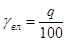
q - масса образца влажного грунта, г.
По результатам опытов строят график, откладывая по оси ординат объемные массы скелета грунта γск, по оси абсцисс - влажность грунта W. Наивысшая точка кривой соответствует максимальной плотности γск и соответственно оптимальной, влажности W0 уплотняемого грунта (табл. 7).
Для одноразмерных песков обычно не получают четко выраженного максимума на кривой, поэтому для таких грунтов определяют оптимальную влажность и плотность на смесях с оптимальным количеством вяжущих (цемента, золы уноса). В этом случае оптимальная влажность составляет, как правило, не менее 10 - 12 %.
Испытание вяжущих материалов (зол уноса, золошлаковых смесей, цемента и извести)
5.3. Свойства вяжущих материалов определяют в соответствии с требованиями следующих ГОСТов:
- зол уноса или золошлаковых смесей - ГОСТ 310-60 (удельную поверхность), ГОСТ 5382-65 (содержание свободной CaO, содержание сернистых и сернокислых соединений и: потерю при прокаливании);
- цемента (портландцемента, шлакопортландцемента и других видов) - ГОСТ 310-60;
- извести - ГОСТ 917970.
Применяемые добавки хлористого кальция (CaCl2), каустической соды (NaOH) должны соответственно удовлетворять требованиям ГОСТ 4141-66 «Кальций хлористый кристаллический» (или ГОСТ 450-70 «Кальций хлористый технический»), сода каустическая NaOH - ГОСТ 2263-59.
Ориентировочные значения оптимальной влажности
|
Влажность, % от массы грунта (числитель) и в долях от влажности границы его текучести (знаменатель) |
|
|
Крупнообломочный |
|
|
щебенистый |
|
|
дресвяный |
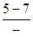 |
|
Пески: |
|
|
гравелистые |
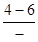 |
|
крупные |
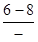 |
|
средней крупности |
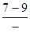 |
|
Пески мелкие и пылеватые, мелкие одноразмерные |
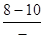 |
|
Супеси |
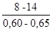 |
|
Суглинки легкие |
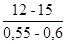 |
|
Суглинки тяжелые |
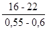 |
|
Глины |
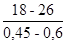 |
Приготовление смесей
5.4. Подготовка грунтов. Грунты высушивают до воздушносухого состояния.
Песчаные и глинистые грунты просеивают через сито с отверстиями 5 мм (глинистые грунты предварительно размельчают). Крупнообломочные грунты просеивают через сито с отверстиями 40 и 25 мм.
Влажность грунта определяют путем высушивания навесок грунта в термостате до постоянной массы при температуре 105 °С.
В случаях, когда проектом предусмотрено улучшение зернового (гранулометрического) состава грунта, вносят соответствующие добавки (песок, гравий, щебень, отходы камнедробления, золы уноса или золошлаковые смеси и др.).
Грунт с этими добавками смешивают без увлажнения.
5.5. Ориентировочные значения оптимальной влажности для исходных грунтов по табл. 7 уточняют для смесей грунтов с золами уноса или золошлаковыми смесями*, применяемыми без или в сочетании с цементом или известью.
* Золошлаковые смеси для укрепления грунтов применяют в соответствии с п. 1.4, б только в сочетании с цементом или известью.
Воздушносухой грунт перемешивают с золой уноса или золошлаковой смесью без или в сочетании с добавками цемента или извести и осуществляют другие операции, необходимые для определения оптимальной влажности и максимальной плотности смеси в соответствии с п. 5.2.
5.6. Приготовление смеси грунта с золой уноса, применяемой в качестве самостоятельного вяжущего, осуществляют в следующем порядке:
В воздушносухой грунт вносят золу уноса, смесь перемешивают и увлажняют (с учетом содержащейся в грунте влаги) до оптимальной влажности.
Смесь тщательно перемешивают в лабораторной лопастной мешалке в течение 4 - 6 мин или вручную.
После этого смесь выдерживают в герметически закрытом сосуде в течение 4 - 5 ч. После указанного срока выдерживания изготовляют образцы.
5.7. Приготовление смеси грунта с золой уноса или золошлаковой смесью, применяемыми в сочетании с цементом или известью, осуществляют в следующем порядке.
В воздушносухой грунт вносят золу уноса или золошлаковую смесь, перемешивают то или иное из указанных веществ с грунтом, затем добавляют цемент или известь и снова перемешивают. Далее смесь увлажняют до оптимальной влажности и перемешивают ее в лабораторной лопастной мешалке (п. 5.6). В случае применения зол уноса или золошлаковых смесей в сочетании с цементом после перемешивания смеси в лопастной мешалке сразу же изготовляют образцы.
В случае применения зол уноса или золошлаковых смесей в сочетании с известью, смесь после лопастной мешалки должна быть выдержана в герметически закрытом сосуде в течение 4 - 5 ч так же, как указано в п. 5.6. После чего разрешается изготовлять образцы.
5.8. Приготовление смеси грунта с золой уноса, применяемой в качестве самостоятельного вяжущего в сочетании с добавками хлористого кальция или соды каустической, осуществляют в том же порядке (п. 5.6). При этом добавку хлористого кальция или соды каустической вводят в смесь в виде раствора при увлажнении смеси до оптимальной влажности.
Затем перемешивают смесь в лопастной мешалке, после чего также выдерживают в герметически закрытом сосуде в течение 4 - 5 ч. Затем изготовляют образцы.
5.9. Ориентировочные добавки зол уноса или золошлаковых смесей, применяемых без или в сочетании с добавками цемента или извести (пп. 3.13 - 3.16), уточняют подбором, приготовляя 3 - 4 пробные смеси, отличающиеся по содержанию вяжущего на 1 - 3 %.
Масса каждой смеси из глинистых и песчаных грунтов равна 2 - 3 кг, а из крупнообломочных с крупностью зерен 25 мм - 10 - 12 кг, с крупностью зерен 40 мм - 25 - 30 кг.
Из этих смесей изготовляют по 6 образцов (п. 5.6) и испытывают их. Минимальную добавку вяжущего, обеспечивающую свойства материала в соответствии с требованиями табл. 1, принимают за оптимальную.
Изготовление образцов и их испытания
5.10. Для определения физико-механических свойств укрепленных грунтов изготовляют образцы-цилиндры и образцы-балочки уплотнением смеси в стальных формах.
Образцы-цилиндры изготовляют в полых цилиндрических формах с двумя вкладышами размерами в зависимости от зернового состава грунтов (табл. 8).
Внутреннюю поверхность формы и вкладыши перед укладыванием смеси смазывают керосином или машинным маслом. В форму вставляют нижний вкладыш, который должен выступать из формы на 1,5 - 2 см для двустороннего уплотнения смеси.
Смесь через металлическую воронку насыпают в форму. Для равномерного распределения смеси ее штыкуют ножом или шпателем, затем вставляют в форму верхний вкладыш. Форму со смесью ставят на нижнюю плиту пресса, подводят верхнюю плиту до соприкосновения с верхним вкладышем и включают электромотор масляного насоса пресса.
Размеры форм и образцов
|
Размеры форм для изготовления образцов-цилиндров |
Размеры образца |
|||
|
диаметр, мм |
высота, мм |
диаметр, мм |
высота, мм |
|
|
Песчаные и глинистые при наибольшей крупности зерен и глинисто-пылеватых комков - 5 мм |
50,1 |
130 |
50 |
50 |
|
Крупнообломочные при крупности зерен - 25 мм |
100,1 |
180 |
100 |
100 |
|
40 мм |
150,5 |
150,5 |
150 |
150 |
Примечание. Формы диаметром 150 мм имеют съемные кольца-насадки высотой 50 мм и плунжер.
Нагрузку уплотнения для глинистых и песчаных грунтов подбирают с таким расчетом, чтобы получить максимальную плотность образцов при оптимальной влажности на приборе стандартного уплотнения.
Влажность смеси при ее уплотнении не должна отличаться от установленной оптимальной влажности больше чем на ± 2 %.
Плотность готовых образцов не должна отличаться от максимальной, определенной по методу стандартного уплотнения, более чем на ± 2 %. Ориентировочно нагрузка уплотнения составляет 100 - 150 кгс/см2.
Требуемую массу образца определяют по формуле:
где V - объем образца, см3;
γск - объемная масса скелета смеси, г/см3;
W0 - оптимальная влажность смеси, %.
Время выдерживания формы со смесью под нагрузкой составляет 3 мин. Затем нагрузку снимают и образец выдавливают из формы под прессом или вручную. При выдавливании образца для удобства используют специальную подставку.
Образцы разрешается изготавливать также трамбованием на приборе стандартного уплотнения при строгом соблюдении оптимальной влажности и максимальной плотности для смеси выбранного состава. Число ударов гири при уплотнении смеси дают такое же, как при уплотнении грунтов.
В стационарных условиях образцы трамбуют на лабораторном копре с механическим приводом. Для этого смесь грунта с вяжущим помещают в разъемный цилиндр прибора стандартного уплотнения, и в собранном виде (за исключением гири и направляющего стержня) закрепляют на столике копра. Смесь уплотняют ударами гири, падающей с высоты 30 см.
5.11. Образцы-балочки изготовляют прессованием в стальных формах с двусторонними вкладышами (см. приложение 1 п. 6 ВСН 164-69).
При уплотнении смеси должно быть обеспечено двустороннее приложение нагрузки за счет свободного перемещения вкладышей навстречу друг другу. Размеры образцов-балочек для разных грунтов указаны в табл. 9.
|
Размеры образца |
|||
|
длина, мм |
ширина, мм |
высота, мм |
|
|
Глинистые и песчаные |
160 |
40 |
40 |
|
Крупнообломочные |
400 |
100 |
100 |
Максимальная крупность частиц при изготовлении образцов-балочек из обломочных грунтов должна быть не более 25 мм. Допускается замена более крупных фракций (25 - 50 мм) равным количеством фракций от 10 до 25 мм.
Стенки формы и вкладыши перед укладыванием смеси смазывают керосином или машинным маслом. Вкладыш должен выступать из формы на 1 - 1,5 см для обеспечения двустороннего уплотнения. Смесь разравнивают, частично уплотняют шпателем, после чего укладывают верхний вкладыш. Форму со смесью ставят на нижнюю плиту пресса, подводят верхнюю плиту пресса до соприкосновения с вкладышем и включают электромотор масляного насоса пресса. При этом ориентировочная нагрузка также составляет 100 - 150 кгс/см2, а время выдерживания под нагрузкой - 3 мин.
Требуемую массу образца вычисляют по формуле (2).
После уплотнения форму с образцом устанавливают на специальную подставку и образец под прессом выдавливают из формы.
5.12. Хранение образцов. Образцы, изготовленные из различных смесей, хранят во влажных условиях. Образцы помещают в ванну с водяным затвором либо в эксикаторы над водой, или во влажный песок. Рекомендуется предварительно образцы завернуть в кальку и смазать тонким слоем парафина.
Образцы из грунтов, укрепленных золой уноса или золошлаковой смесью (применяемыми без или в сочетании с цементом или известью), предназначенные для определения пределов прочности при сжатии, на растяжение при изгибе, при расколе, коэффициента морозостойкости, хранят 90 суток.
Для получения ориентировочных значений показателя прочности при сжатии образцы хранят 28 суток (показатели прочности при сжатии после 28 суток твердения должны составлять не менее 50 % от значений, указанных в табл. 1).
Водонасыщение образцов для определения прочности
5.13. Полное водонасыщение. Образцы высотой и диаметром, равным 5 см, насыщают в спокойной воде в течение двух суток, а образцы больших размеров в течение трех суток, причем в обоих случаях в первые сутки образцы погружают в воду на ⅓ высоты, а в последующие - полностью заливают водой. Для предотвращения высыхания образцов, погруженных в воду на ⅓ высоты, насыщение производят в ванне с водяным затвором.
Рис. 1. Приспособление для капиллярного водонасыщения образцов:
1 - сосуд; 2 - образцы; 3 - капиллярно увлажненный песок; 4 - водонасыщенный песок; 5 - фильтровальная бумага; 6 - металлическая сетка; 7 - подставка
5.14. Капиллярное водонасыщение образцов производят через слой влажного песка. В металлический или стеклянный сосуд с уровнемером наливают слой воды до уровня, указанного на рис. 1. С помощью уровнемера поддерживают постоянный уровень воды в сосуде.
В сосуд на металлической подставке укладывают металлическую сетку или емкость с сетчатым дном, которое закрывают фильтровальной бумагой. На фильтровальную бумагу насыпают слой мелкого одноразмерного песка толщиной 15 см и через сутки после его насыщения ставят образцы. Образцы капиллярно насыщают в течение трех суток. Для предотвращения высыхания сосуд с образцами помещают в ванну с гидравлическим затвором.
Определение предела прочности при сжатии
5.15. Предел прочности при сжатии в зависимости от размера образца и его прочности определяют на прессах гидравлических (или другого типа) мощностью 0,5 - 5 - 10 - 20 т. Точность показаний силоизмерительного устройства пресса должна составлять ± 2 %. Рабочая скорость свободного хода поршня должна быть равна 3 мм/мин. Скорость проверяют перед испытаниями и в процессе длительных испытаний (более 1 ч) с помощью индикатора часового типа. Указанная выше скорость соответствует 300 делениям индикатора с ценой деления 0,01 мм за 1 мин.
5.16. Предел прочности при сжатии определяют на цилиндрических образцах. Образцы перед испытанием подвергают полному или капиллярному водонасыщению (пп. 5.13 - 5.14).
Образец устанавливают в центре нижней плиты пресса, затем поднимают нижнюю плиту или опускают верхнюю плиту так, чтобы зазор между образцом и верхней плитой составлял 2 -3 мм. Устанавливают скорость подъема нижней плиты пресса 3 мм/мин. После этого включают основной электромотор пресса и нагружают образец.
Для повышения точности испытания рекомендуется использовать шарнирное устройство (рис. 2), которое устанавливают на образец для равномерного распределения напряжений при небольших перекосах, возникающих из-за непараллельности оснований образца.
Рис. 2. Шарнирное устройство:
1 - шарик стальной d = 6 - 8 мм, 2 - металлические пластинки; 3 - образец укрепленного грунта, 4 - прокладка из плотной бумаги
5.17. Предел прочности при сжатии вычисляют по формуле:
где Р - разрушающая нагрузка, кгс;
F - первоначальная площадь основания образца, см2.
Предел прочности при сжатии вычисляют с точностью до 0,5 кгс/см2, как среднее арифметическое результатов испытаний трех образцов. Расхождение между результатами испытаний отдельных образцов не должно превышать 15 %.
5.18. Предел прочности при сжатии допускается определять на половинках балочек, остающихся после определения прочности на растяжение при изгибе. Половинку каждой балочки помещают между двумя стальными пластинками размером 40´62,5 мм. Пластинки укладывают на боковые грани, прилегавшие во время изготовления образца к продольным стенкам формы. Образец вместе с пластинками ставят на нижнюю плиту пресса и подвергают испытанию (пп. 5.15 - 5.17).
Определение предела прочности на растяжение при изгибе
5.19. Предел прочности на растяжение при изгибе определяют на образцах-балочках. В зависимости от прочности и размера образцов испытания проводят на прессах гидравлических (или другого типа) мощностью 0,5 - 5 - 10 т. Точность показаний силоизмерительного устройства пресса должна составлять ± 2 %. Прессы для испытания образцов-балочек на изгиб должны быть оборудованы дополнительными приспособлениями: специальными столами, мостами или траверсами, несущими на себе цилиндрические опоры для балочек, при этом одна из опор должна быть подвижной. Радиус закругления опорных поверхностей должен быть в пределах 10 - 15 мм.
Перед испытанием образцы полностью насыщают водой (п. 5.13). После извлечения из воды образцы вытирают мягкой тканью.
Испытуемый образец помещают на две опоры, расстояние между которыми равно 140 мм - для балочек размером 40´40´160 мм и 300 мм - для балочек размером 100´100´400 мм. Образец на опоры кладут той гранью, которая при уплотнении была вертикальной. Поверхность балочки должна плотно прилегать к опорам по всей ширине. Образец нагружают по середине пролета по всей ширине через подкладку под верхнюю плиту пресса.
После установки образца опускают верхнюю плиту пресса так, чтобы зазор между образцом и подкладкой под верхнюю плиту пресса составлял 4 - 6 мм. После этого рычаг переключения скоростей пресса устанавливают на скорость подъема нижней плиты 3 мм/мин. Перед испытаниями и после длительных испытаний (более 1 ч) проверяют скорости с помощью индикатора часового типа. Включают основной электромотор пресса и нагружают образец.
5.20. Величину предела прочности на растяжение при изгибе вычисляют по формуле:
где Р - разрушающая нагрузка, кгс;
l - расстояние между опорами, см;
b - ширина балочки, см;
h - высота балочки, см.
Предел прочности на растяжение при изгибе вычисляют с точностью до 0,5 кгс/см2, как среднее арифметическое результатов испытания трех образцов. Расхождение между результатами отдельных испытаний не должно превышать 15 %.
Определение предела прочности на растяжение при расколе
5.21. Ориентировочные значения предела прочности на растяжение при изгибе можно получить по результатам испытания цилиндрических образцов на осевое растяжение (раскол)
Предел прочности на растяжение при расколе определяется на образцах-цилиндрах диаметром и высотой 5 см - при содержании частиц размером не более 5 мм; диаметром и высотой 10 см - при содержании частиц размером не более 25 мм.
5.22. Предел прочности на растяжение при расколе определяют на образцах в водонасыщенном состоянии после твердения их в течение 28 суток во влажных условиях (п. 5.13).
Образцы испытывают на гидравлических и других прессах. Точность показаний силоизмерительного устройства пресса и рабочая скорость при испытаниях должна соответствовать п. 5.15. Верхняя плита пресса должна быть установлена на сферическом шарнире, расположенном в центре плиты, и должна иметь возможность свободно поворачиваться в любом направлении. Размеры плит должны быть не менее размера образца.
5.23. Образец устанавливают на прессе так, чтобы плиты пресса прилегали к двум взаимно противоположным образующим (см. приложение 1, п. 7 ВСН 164-69). Направление сжимающей силы должно совпадать с диаметральной плоскостью образца, а ось образца должна проходить через центр шарнира плиты пресса. Для удобства и большей точности испытания рекомендуется изготовить специальное приспособление (шаблон).
Для равномерного распределения нагрузки между плитами пресса и испытуемым образцом помещают прокладки из обычной трехслойной фанеры или пластика. Длина прокладок должна быть не менее длины образца, а ширина прокладок должна составлять 0,2 диаметра образца.
Образец устанавливают на шаблоне и помещают на нижнюю плиту пресса.
Подводят верхнюю плиту пресса так, чтобы зазор между верхней плитой шаблона и верхней плитой пресса составлял 4 - 6 мм.
Устанавливают рычаг переключения скоростей пресса на скорость подъема нижней плиты пресса 3 мм/мин и включают основной электромотор испытательной машины.
5.24. Предел прочности на растяжение при расколе вычисляют по формуле
где Рmax - разрушающая нагрузка, кгс;
d - диаметр образца, см;
l - высота образца, см;
- коэффициент, характеризующий распределение нагрузки по контакту с образцом.
Испытывают три параллельных образца. Величину прочности на растяжение при расколе вычисляют с точностью до 0,5 кгс/см2, как среднее арифметическое значение трех результатов испытаний образцов. Расхождение между отдельными результатами не должно превышать 15 %.
Предел прочности на растяжение при изгибе равен удвоенному пределу прочности на растяжение при расколе Rизг = 2RP.
Определение морозостойкости
5.25. На морозостойкость испытывают три образца, после их твердения в сроки, указанные в табл. 1. Перед началом испытания образцы подвергают полному (п. 5.13) или капиллярному (п. 5.14) водонасыщению, после чего подвергают их попеременному замораживанию-оттаиванию по табл. 10.
Рекомендуемое количество циклов замораживания-оттаивания, температура замораживания и степень водонасыщения для образцов укрепленных грунтов с учетом конструкции одежды и дорожно-климатической зоны
|
Дорожно-климатические зоны |
||||
|
II |
III |
IV |
V |
|
|
Верхние слои основания под двухслойным асфальтобетонным покрытием или основание под цементобетонным покрытием |
Мрз 25 - 22° (П) |
Мрз 15 - 10° (K) |
Мрз 10 - 5° (К) |
|
|
Нижний слой основания под двухслойным асфальтобетонным или битумоминеральным покрытием |
Мрз 15 - 10° (П) |
Мрз 15 - 10° (К) |
Мрз 10 - 5° (К) |
Мрз 5 - 5° (К) |
|
Верхний слой основания под однослойным покрытием из битумоминеральной смеси или холодного асфальтобетона |
Мрз 15 - 22° (П) |
Мрз 15 - 22° (П) |
Мрз 15 - 10° (П) |
Мрз 10 - 5° (К) |
|
Нижний слой основания под однослойным покрытием из битумоминеральной смеси или холодного асфальтобетона |
Мрз 10 - 10° (П) |
Мрз 10 - 10° (П) |
Мрз 5 - 10° (К) |
- |
|
Однослойное покрытие из укрепленного грунта с двойной поверхностной обработкой |
Мрз 15 - 22° (П) |
Мрз 10 - 22° (П) |
Мрз 10 - 5° (К) |
Мрз 5 - 5° (К) |
Примечания. 1. Мрз 25 - морозостойкость после 25 циклов замораживания-оттаивания,
- 22° - температура замораживания;
(П) или (К) - полное или капиллярное водонасыщение
2 В V дорожно-климатической зоне испытания на замораживание-оттаивание проводят для районов строительства дорог и аэродромов, расположенных севернее линии Баку - Никус - Кзыл - Орда - Фрунзе.
После замораживания в морозильной камере в течение 4 ч при температуре, указанной в табл. 10, образцы погружают в воду комнатной температуры на 4 ч, а при капиллярном насыщении - на влажный песок.
После проведения установленного количества циклов замораживания-оттаивания (см. табл. 10), на оттаявших образцах определяют предел прочности при сжатии Rмрз (пп. 5.15 - 5.18) и влажность.
Для определения влажности после разрушения образцов отбирают среднюю пробу и высушивают ее до постоянного веса при температуре 105 °С. Влажность вычисляют по формуле
где P1 - масса пробы водонасыщенного образца, г;
Р2 - масса высушенной пробы, г.
Морозостойкость оценивают по водонасыщению и Rмрз, а также коэффициентом морозостойкости (отношение
прочности при сжатии образцов после прохождения установленного количества
циклов замораживания-оттаивания к прочности
водонасыщенных (полностью или капиллярно)
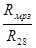 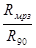
Методы испытания золошлаковых смесей для сооружения земляного полотна
5.26. Пригодность золошлаковых смесей, применяемых при сооружении земляного полотна, необходимо оценивать по следующим методикам:
- химический состав - по ГОСТ 5382-65 «Цементы. Методы химического анализа»;
- зерновой состав - по ГОСТ 12536-67 «Грунты. Методы лабораторного определения зернового (гранулометрического) состава»;
- величину относительного морозного пучения - по приложению настоящих «Технических указаний»;
- оптимальную влажность и стандартную плотность, плотность - в соответствии с ВСН 55-69.
* Материалы - золы, золошлаковые смеси, шлаки, каменная мелочь и др.
Методика испытаний по определению пригодности материалов для устройства морозозащитных слоев («Инструкция по проектированию дорожных одежд нежесткого типа» ВСН 46-72, приложение 9) заключается в замораживании образцов материалов и измерении деформаций их морозного пучения в условиях, близких к условиям пучения при промерзании грунтов земляного полотна автомобильных дорог.
При этом в лаборатории для условий Европейской части СССР эти испытания грунтов (материалов) проводят при температуре воздуха в камере от - 3° до - 4 °С, для условий Сибири и Северного Казахстана - от - 5° до - 6 °С.
Испытания по этой методике проводят в специальном стакане (диаметром 100 мм и высотой 82 мм), собранным из колец (высотой 10 мм) с выточками (3 мм), позволяющими кольцам свободно перемещаться вдоль вертикальной оси, что обеспечивает беспрепятственное вспучивание образца при замерзании. Стакан снабжен поддоном со штуцером для подвода воды к образцу.
Образец из испытуемого материала приготовляют в указанном стакане так же, как при испытании по методу стандартного уплотнения - с обеспечением получения плотности 0,98 - 1 от стандартной при оптимальной влажности.
Приготовленный в стакане образец в течение 2 - 4 суток при комнатной температуре насыщают водой.
Для промораживания образцов применяют фреоновые холодильники или домашние холодильники, холодильные агрегаты которых заменяют агрегатом холодильника ЗИЛ (с испарителем, собранным из четвертой части трубок конденсатора от агрегата ФАК-0,7), а также с заменой терморегулятора холодильника новой системой регулировки с применением ртутного конфектного термометра ТК-6 и реле переменного тока МКУ-48.
Приготовленные в стаканах образцы грунта (материала) после их насыщения водой помещают в камеру холодильника. К образцам подводят воду от резервуара с помощью шлангов и устройства, позволяющего поддерживать постоянный заданный уровень воды.
Установленные в холодильник стаканы с образцами испытуемых грунтов (материалов) засыпают до верхних торцов изоляционным материалом (опилки или мипора) для того, чтобы промораживание образцов происходило только сверху вниз. При этом нужно следить за тем, чтобы изоляционный материал не подмачивался водой.
При испытании величина деформации морозного пучения измеряется с помощью индикаторов (мессур). Опыт продолжается до полного промерзания образца, которое продолжается около четырех суток. К этому времени показания индикаторов уже не изменяются, что указывает на окончание процесса промерзания.
Величина относительного морозного пучения Кпуч определяется на основании показаний индикаторов по формуле
где Dh - величина пучения образца, мм,
h - начальная высота образца, мм
Изготовление оборудования и устройств для проведения испытаний по вышеприведенной методике силами лабораторий производственных организаций в обычных механических мастерских не представляется возможным.
Поэтому для определения величины относительного морозного пучения грунтов (материалов) рекомендуется проводить по методике с применением имеющегося в производственных лабораториях оборудования и прибора, который может быть изготовлен в обычных механических мастерских.
1. Описание прибора
Для проведения испытания грунтов (материалов) на морозное пучение применяется измененный (в отношении размеров) прибор Д.И. Знаменского для определения набухания грунтов «ПНЗ».
Прибор (см. рисунок) состоит из кольца, изготовленного из нержавеющей стали, обоймы, в верхней части которой устанавливается и закрепляется индикатор, перфорированного поддона, перфорированного штампа, ванночки и зажимного винта. Все детали прибора, кроме кольца и зажимного винта, могут быть изготовлены из оргстекла.
Общий вид прибора
1 - индикатор; 2 - обойма, 3 - штамп; 4 - кольцо; 5 - ванночка, 6 - поддон, 7 - вода, 8 - изоляционный материал (парафиновая паста), 9 - зажимной винт.
II. Порядок работы
А Подготовка образца к испытанию.
Определяют оптимальную влажность и максимальную плотность испытуемого грунта (материала) при стандартном уплотнении.
Отбирают среднюю пробу испытуемого грунта (материала) весом около 1 кг и определяют ее влажность. К отобранной пробе грунта (материала) добавляют воду и тщательно перемешивают. Воду добавляют из такого расчета, чтобы влажность пробы соответствовала оптимальной влажности испытуемого грунта (материала), установленной при стандартном уплотнении. Требуемое количество воды рассчитывают по формуле.
где g - масса взятой пробы испытуемого грунта (материала), г,
W - исходная влажность пробы испытуемого грунта (материала), доли единицы,
Wопт - оптимальная влажность испытуемого грунта (материала), установленная при стандартном уплотнении, доли единицы.
После тщательного перемешивания пробы с водой ее выдерживают в закрытом сосуде в течение 1 - 2 ч. По окончании выдерживания пробы из нее берут три навески испытуемого грунта (материала) для формования образцов цилиндрической формы диаметром 5 см и высотой 5 см, объемная масса скелета которых должна соответствовать максимальной плотности испытуемого грунта (материала), установленной при стандартном уплотнения.
Величину навески g испытуемого грунта (материала) для получения образца с задаваемой плотностью (максимальной плотностью) рассчитывают по формуле
g = V γск (1 + 0,01 Wопт), (3)
где V - объем образца заданного размера (диаметром 5 см и высотой 5 см), см3;
γск - максимальная плотность испытуемого грунта (материала), установленная при стандартном уплотнении, г/см3;
Wопт - влажность пробы, %.
Отобранные навески пробы помещают в формы (с внутренним диаметром 5 см), которые применяют для изготовления образцов при лабораторных экспериментах по укреплению грунтов вяжущими материалами. Затем в формы устанавливают поршни и под прессом формуют образцы высотой 5 см.
Изготовленные образцы испытуемого грунта (материала) помещают в кольца прибора для определения набухания, предварительно смазав внутренние поверхности колец техническим вазелином (тонким слоем).
В поддон прибора укладывают кружок фильтровальной бумаги, вырезанной по внутреннему диаметру кольца. Кольцо с образцом помещают в поддон, который устанавливают в ванночку прибора.
В ванночку наливают воду до уровня верхнего торца поддона и образец насыщают водой, поддерживая постоянный уровень воды в ванночке.
Насыщение образца проводят до тех пор, пока вода не пропитает по капиллярам всю толщу образца; это можно заметить по потемнению поверхности последнего.
По окончании насыщения образца водой на его поверхности укладывают второй кружок фильтровальной бумаги, а затем штамп и ввинчивают обойму в поддон прибора. В ванночку прибора доливают воду так, чтобы уровень воды в ванночке был на высоте ⅓ образца в кольце.
На плиту лабораторного штатива устанавливают кристаллизатор, в который помещают форму из картона (диаметром 25 - 27 см и высотой 16 - 18 см); в кристаллизатор наливают воду в таком количестве, чтобы толщина слоя ее в кристаллизаторе была около 3 - 5 мм.
Собранный прибор подвешивают с помощью мягких тонких проволок закрепленных в отверстиях ванночки прибора, к кольцу лабораторного штатива так, чтобы прибор находился в центре картонной формы, а дно ванночки было на расстоянии 8 - 10 см от дна кристаллизатора.
По окончании подвешивания прибора к кольцу штатива в картонную форму и ванночку прибора осторожно заливают расплавленную парафиновую пасту (температура пасты около 60 °С) для получения теплоизоляционного слоя толщиной 8 - 10 см (как это показано на рис. 1), чтобы промораживание образца происходило только сверху вниз.
Примечание. 1. Для получения парафиновой пасты к парафину добавляют 20 - 25 % воска (по массе), 5 - 10 % канифоли и 3 - 5 %. минерального масла.
2. Эту смесь разогревают в кастрюле до получения гомогенной, массы.
По окончании твердения парафиновой ласты в картонной форме и в ванночке прибора укрепляют индикатор в обойме прибора так, чтобы ножка индикатора коснулась головки штампа.
б) Проведение испытания
Подготовленные описанным способом приборы помещают в холодильную камеру, включают ее в электросеть. Испытание ведут при температуре воздуха. В камере - 5 °С. В процессе испытания следят за деформацией морозного пучения, которое измеряется с помощью индикатора.
Опыт продолжают до тех пор, пока показания индикаторов не будут изменяться, что укажет на окончание промерзания образцов. Вообще окончание процесса промерзания, как показывает опыт, происходит через двое суток после помещения образцов в холодильную камеру.
По окончании испытания, на основании установленных величин деформации морозного пучения, вычисляют величину относительного морозного пучения Кпуч испытуемого грунта (материала) по формуле (1).
СОДЕРЖАНИЕ
|
2. Конструктивные требования. 4 3. Требования к материалам.. 5 4. Технология производства работ. 11 Приложение. Методика определения величины относительного морозного пучения грунтов (материалов) 26 |